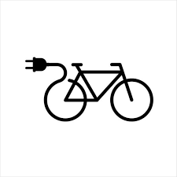

Carros Elétricos
Os carros elétricos são veículos que utilizam motores elétricos alimentados por baterias recarregáveis em vez de combustíveis fósseis. Eles oferecem diversos benefícios ambientais, incluindo:
- Redução significativa de emissões de gases de efeito estufa;
- Menor poluição do ar em comparação com veículos a combustão;
- Redução da dependência de combustíveis fósseis.
Recentemente, tem havido avanços significativos na tecnologia de baterias, aumentando a autonomia dos carros elétricos e tornando-os mais acessíveis ao público em geral.
Bicicletas Elétricas
As bicicletas elétricas são uma opção cada vez mais popular para viagens urbanas curtas e médias. Elas combinam a simplicidade e praticidade das bicicletas tradicionais com a assistência elétrica, proporcionando os seguintes benefícios:
O avanço da tecnologia de baterias tem aumentado a autonomia das bicicletas elétricas e reduzido seus custos, tornando-as uma alternativa viável para o transporte urbano sustentável.
Transporte Público Sustentável
O transporte público sustentável inclui iniciativas como ônibus elétricos, trens movidos a energia limpa e sistemas de trânsito de alta capacidade. Estas soluções ajudam a reduzir o congestionamento e as emissões de carbono nas cidades, oferecendo os seguintes benefícios:
- Redução das emissões de gases de efeito estufa e poluentes atmosféricos;
- Alívio do congestionamento urbano e melhorias na mobilidade;
- Promoção de um estilo de vida mais sustentável e acessível.
Com o investimento em infraestrutura e tecnologias de transporte público sustentável, as cidades podem criar ambientes mais limpos, seguros e eficientes para seus habitantes.